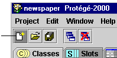

Creating a Project
Creating a Project

There are two ways to create a new Protégé-2000 project:
Creating a Project When You Start Protégé
To create a project when you start Protégé:
- Start Protégé.
A dialog box allows you to create a new project, open a recent project, or
get help.

- Unless you have a need for a special format for your files, make sure Standard
Text Files is selected in the New Project field at the left of the
window. This will create a project file in Protégé-2000 format. (See Project
Structure, below, for more information about file formats.)
- Click New.
The Protégé window opens and the standard tabs become visible. An initialized knowledge base will be created which contains the system classes rooted in
:THING. No instances will be created. You can now structure your project by
creating your classes and slots. (See Creating a New Class
and Creating a Slot for more information.)
- To save the project to disk, select Save
from the Project menu.
- Enter a name for your project in the Project line of the dialog box. This is the
name of your project (.pprj) file. Protégé also creates
internal files for its own use. By default, these files are given the same
name, with a different extension.
Creating a Project From the Protégé Window
To create a new Protégé-2000 project:
- Select New from the Project
menu or click the New Project button
 .
.

- You will be prompted to save changes to the current file, if any. Click Yes
to save changes, No if for some reason you do not want to modify the
file (e.g., if you have been browsing or experimenting).
- Select the format you want for your Protégé-2000 files from the Select
Format dialog and click OK.
Unless you have a need to create files in a special format, make sure Standard Text Files
is selected. (See Project Structure, below,
for more information about file formats.)
- An initialized knowledge base will be created which contains the system classes rooted in
:THING. No instances will be created. You can then structure your project by
creating your classes and slots. (See Creating a New Class
and Creating a Slot for more information.)
- To save the project to disk, select Save
from the Project menu.
- Enter a name for your project in the Project line of the dialog box. This is the
name of your project (.pprj) file.
Project Structure
Each time you create a project, you are given a choice of project formats.
Unless you have a need for a specific structure (e.g., for exporting files), you
should select Standard Text Files. No matter which format you choose, the information specific to the Protégé-2000 interface is saved in a pprj (Protégé project)
file. You can create, open, and save your projects directly via the pprj
file. You do not need to name or access any other files unless you wish to import
a project.
Internally, Protégé maintains two files in addition to the pprj
file; these files contain further information
about the ontology and instances of the project. When you open a pprj
file, Protégé-2000 automatically loads these files. By default, the additional files are saved in text format:
- a text file containing the class and slot information, given the extension pont
(Protégé ontology).
- a text file containing the instance information, given the extension pins
(Protégé instances).
Whenever you are creating a project, you are given a choice of formats in
which these files could be saved:
-
Standard Text Files (the default) creates the project files in Protégé-2000
format as described above. These can also be viewed with any text editor or word processor.
- JDBC Database creates the project as a table in a JDBC database. To
do this you must have a database installed and configured on your system.
See Saving a Database Project
for more information.
- Resource Description Framework (RDF) saves the project in RDF format.
See Saving an RDF Project as well as RDF Support in Protégé-2000
for more information.
If your version of Protégé-2000 has been customized to support additional
formats, then you will also see them in this list.
In all cases, Protégé-2000 still uses the pprj file to access the
project. You should not see a difference within Protégé.
Next: Opening a Project
Project Table of Contents